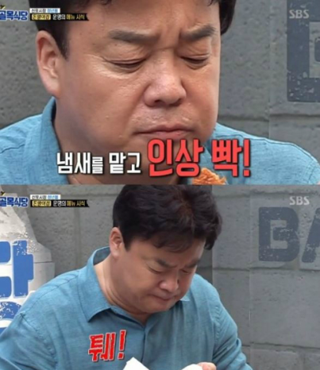
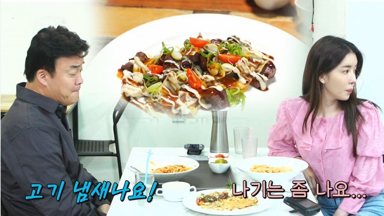
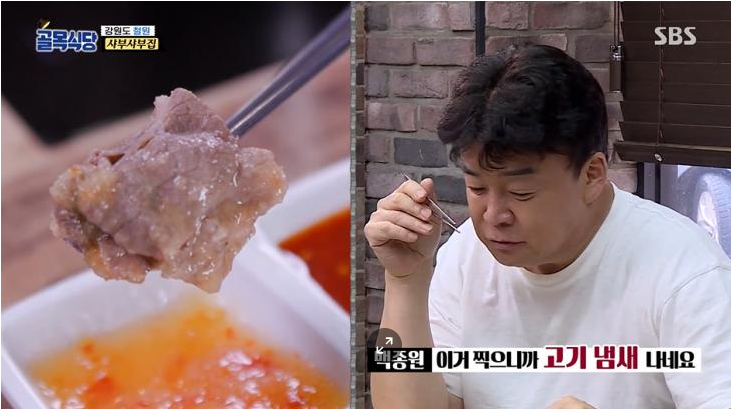
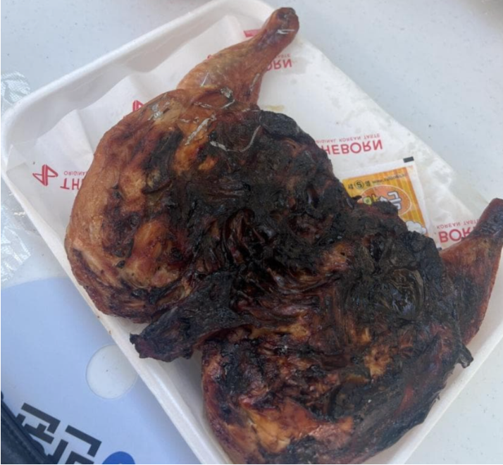
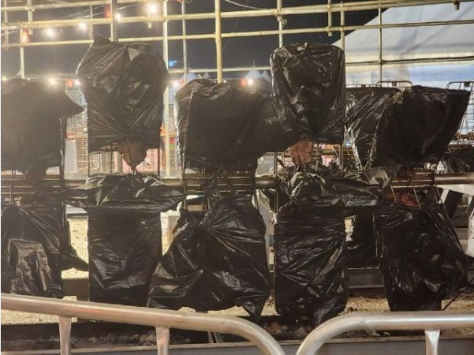
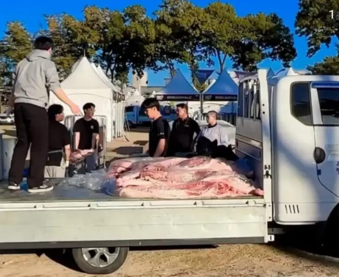

일단 무조건 고기 냄새 남다면서 위생 지적 함 이후 가스라이팅 및 갈굼 시전 남극 기지의 열악한 환경에서도 예외는 없음 일단 무조건 하고 봄



본인 고기는 알바 아님



일단 무조건 고기 냄새 남다면서 위생 지적 함 이후 가스라이팅 및 갈굼 시전 남극 기지의 열악한 환경에서도 예외는 없음 일단 무조건 하고 봄



본인 고기는 알바 아님
댓글
수집 당시 댓글 23개
두기루기 · 1 일 전
저희 고기 아니에유 (니들이 먹을거니까)
콩냉이순장고 · 1 일 전
빅광대 · 1 일 전
빽냄새 나유
쌀때사서비쌀때판다어렵니 · 1 일 전
저건 내입에 들어올거고 이건 니입에 드갈거니까요!
우상미 · 1 일 전
이렇게 다 까발려졌는데, 창업하는 사람들은 능지가 도대체...
위행위자 · 1 일 전
폐드럼통 바베큐 빠졌네유
자감돌이 · 1 일 전
쇼맨쉽에 자꾸 집중하니까 기본기를 놓치는 거 같음 옛날 썰 푸는 거 보면 장사 딱히 안되도 분주하게 보이려고 생고기 일부러 같은 거 왔다갔다 하면서 나르는 척 했다던데 그 노력이랑 효과는 인정한다만 음식 위생은 기본인데 왜 유기하는 거야
꿍l디 · 1 일 전
출신의 중요성이 여기서 나오는거임 기본기 빡세게 구르면서 배운사람들은 저런 상황에서 이건 아니지 하는 부분이 있는데 그게 없는거지
ediredo · 1 일 전
요리사 라고 안하고 요리연구가 라고 한게 이런거때문임 아 난 요리사 아니라니까
토끼전문가 · 1 일 전
회사에서코고는중 · 1 일 전
돼지냄세 나요? 본인 혀라도 씹으셧나
루이비통닭 · 1 일 전
본인 인중냄새인가봄
항만가이 · 1 일 전
나요~
코어운동 · 1 일 전
한 입 씹기만 하면 머릿속에서 게놈 지도가 군침이 싹~~ 돌게 그려지며 전 세계 각지 어디에서 자랐고 어떤 품종의 육우인지 까지 다 맞추는 분이시다
그런데이것은틀렸습니다 · 1 일 전
비닐봉다리는 뭐냐 설마 장사 끝나고 저렇게해놓고 다음날 파는거? 너무 충격적이네
mz틀딱 · 1 일 전
알면서 저 ㅈㄹ하는게 더 나쁨
오늘의유머회원 · 1 일 전
냄새나 미세한맛 지적하는컨셉 다 열등감에서부터 시작된것. 백쌤이 하는 요리들을보면 과하게 자극적임 일반인들이 먹기 힘들정도로 짜고 달때가 많음. 과거 마리텔에서 시식하는 사람들은 기겁을하는데 본인은 이상없다 이랫엇음 미각자체가 매우 둔한 사람. 그렇게살다가 둔한감각에 열등감이 터진 시점이 한식대첩인듯함
오늘의유머회원 · 1 일 전
https://youtube.com/shorts/qSnEc--3l04?si=VOMM2Zc3adjtJw33 https://youtu.be/Db0W6s0mcH4?si=JXLbi_nBiVeTs3Gd
오늘의유머회원 · 1 일 전
여기서도 백종원은 아무것도 못느끼는데 최현석만 냄새에 민감하게 반응함 이때 백쌤이 영감을 받은거같음 "남들은 못느끼는 감각에 예민한 전문가" 새로운 가면이 만들어진 순간임
갈비갈비매운갈비 · 1 일 전
홍콩반점가서 탕수육시키고 돼지냄새 조금이라도나면 컴플레인걸면 환불해줌?
튀김가루 · 1 일 전
내꺼 내먹이지만 이건 우리 탕수육 아니라고 하는데 실제로 직영점은 없어서 맞는 말이긴 하지만..
ISTP · 1 일 전
가장 기본이 잡내 잡기긴한데 ㅋㅋ 요즘 잡내나는 고기가 얼마나 된다고 매 솔루션에서 잡내타령만 하는지 ㅋㅋㅋㅋㅋㅋ 걍 수준의 한계라고 밖엔
독고무영 · 22 시간 전
백종원 댕스렉터